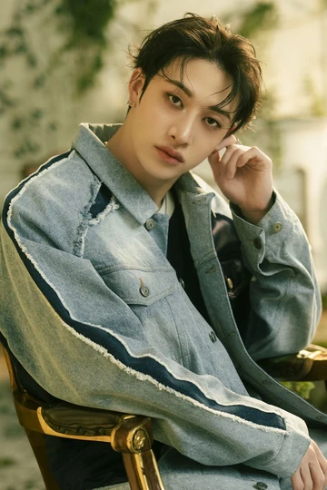
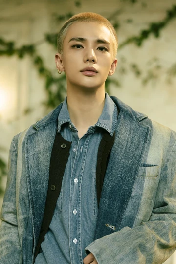
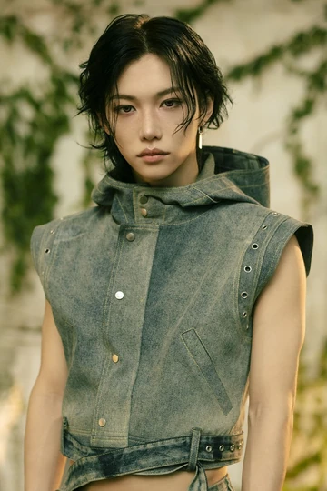
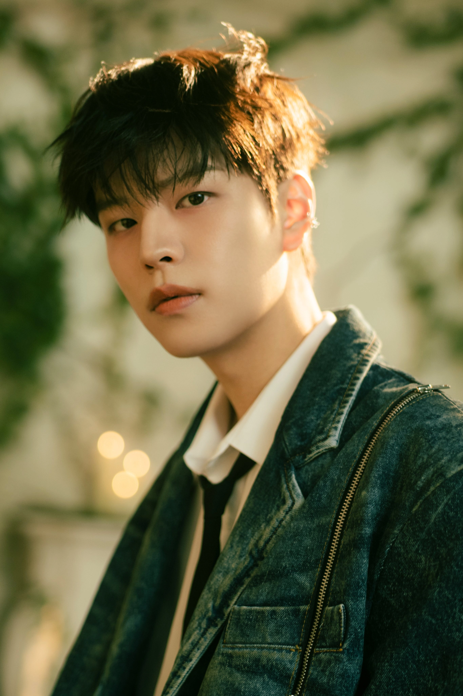
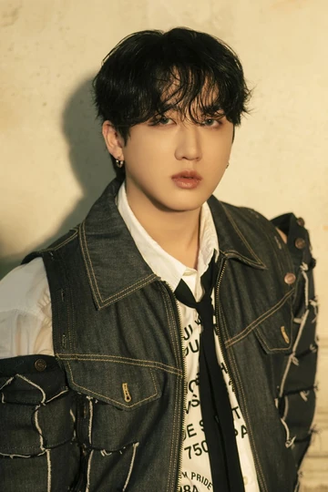
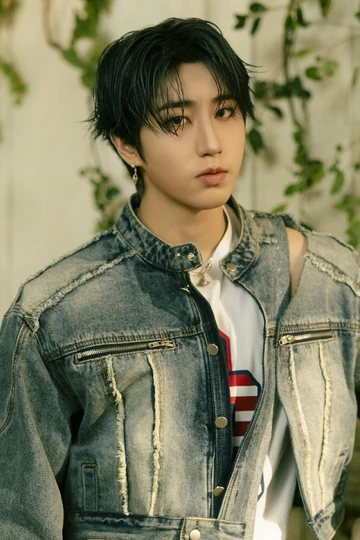
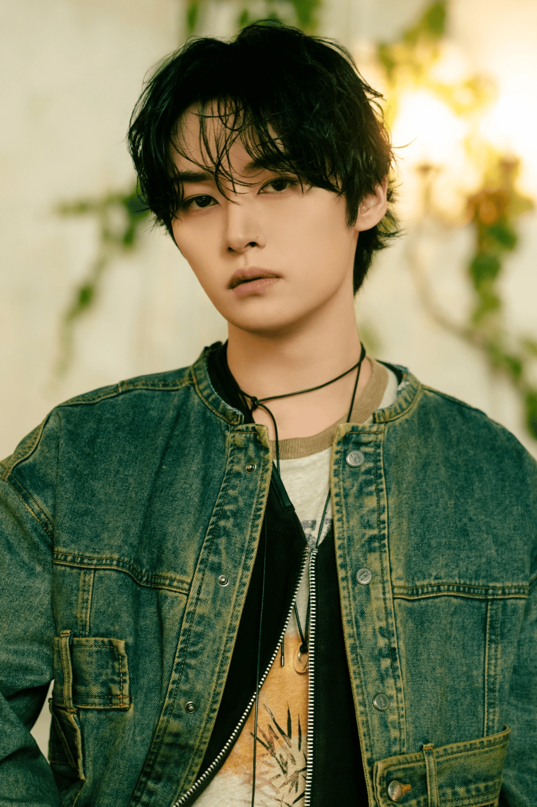
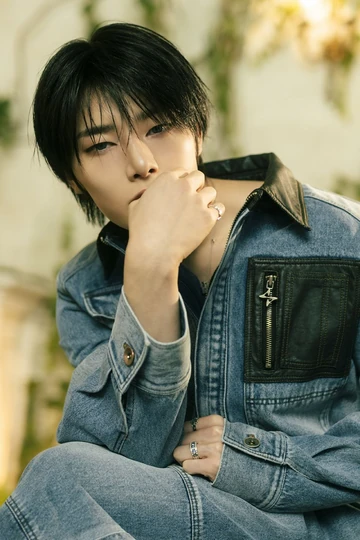

De izquierda a derecha: I.N,Lee Know, Seungmin, Hyunjin, Han Jisung, Changbin, Felix, BangChan
CONOCE A TODOS

Nombre: 방찬 / Bang Chan
Nombre japonés: バンチャン
Nombre inglés: Christopher Bang
Fecha de nacimiento: 03/10/1997
Edad: 27 años
Apodos: CB97
Roles: Líder, productor, vocalista, rapero, bailarín
Profesión: Cantante, Rapero, Bailarín, Productor y Compositor
Sub-unidades: 3RACHA
Estatura: 1.71 m
Peso: 65 kg
Signo zodiacal: Libra
Signo chino: Buey
Agencia: JYP Entertainment
Periodo de entrenamiento: 7 años.
Emogi Representativo: 🐺 (lobo)
SKZOO: Wolf Chan

Nombre: 현진 / Hyun Jin
Nombre completo: 황현진 / Hwang Hyun Jin
Nombre japonés: ヒョンジン
Fecha de nacimiento: 20/03/2000
Edad: 25 años
Lugar de nacimiento: Seúl, Corea del Sur
Apodos: Jinnie, Principe.
Roles: Rapero, Vocalista y Bailarín.
Profesión: Rapero, Cantante, Bailarín, Modelo y MC
Sub-unidades: DANCE RACHA
Estatura: 1.83 m
Peso: 65 kg
Signo zodiacal: Piscis
Signo chino: Dragón
Agencia: JYP Entertainment
Periodo de entrenamiento: 2 años.
Emogi Representativo: 🦙 (llama) / 🥟 empanada
SKZOO: Jiniret

Nombre: 필릭스 / フィリックス / Felix
Nombre coreano: 이용복 / Lee Yong Bok
Nombre real: Felix Lee
Fecha de nacimiento: 15/09/2000
Edad: 24 años
Apodos:Bbijikeu, Bbajikseu, Bbujikseu, Jjikseu, Lix, Bokkie, Innocent Boy
Roles: Rapero, Vocalista y Bailarín.
Profesión: Rapero, Cantante, Bailarín, MC
Sub-unidades: DANCE RACHA / BABYRACHA
Estatura: 1.71 m
Peso: 56 kg
Signo zodiacal: Virgo
Signo chino: Dragón
Agencia: JYP Entertainment
Periodo de entrenamiento: 10 meses
Emogi Representativo: 🐱 / 🐥 (gatito/pollito)
SKZOO: BbokAri

Nombre: 승민 / スンミン / Seung Min
Nombre completo: 김승민 / Kim Seung Min
Fecha de nacimiento: 22/09/2000
Edad: 24 años
Apodos:Seungmo, Cherry, Dandy Boy, Minnie
Roles: Vocalista y Bailarín.
Profesión: Cantante, Bailarín, MC
Sub-unidades: VOCAL RACHA
Estatura: 1.78 m
Peso: 56 kg
Signo zodiacal: Virgo
Signo chino: Dragón
Agencia: JYP Entertainment
Periodo de entrenamiento: 1 año
Emogi Representativo: 🐶 (perrito)
SKZOO: PuppyM

Nombre: 창빈 / Chang Bin
Nombre completo: 서창빈 / Seo Chang Bin
Nombre japonés:チ ャ ン ビ ン
Fecha de nacimiento: 11/08/1999
Edad: 25 años
Apodos:Binnie, Baby changbin, Dwaekki, Spear B
Roles: Rapero, Vocalista y Bailarín.
Profesión:Rapero, Cantante, Compositor, Bailarín y Productor
Sub-unidades: 3RACHA
Estatura: 1.69 m
Peso: 62 kg
Signo zodiacal: Leo
Signo chino: Conejo
Agencia: JYP Entertainment
Periodo de entrenamiento: 2 años
Emogi Representativo: 🐷🐰 (cerdo, conejo)
SKZOO: DWAEKKI

Nombre: 한 / Han
Nombre completo:한지성 / Han Ji Sung
Nombre japonés: ハン
Nombre inglés:Peter
Fecha de nacimiento: 14/08/2000
Edad: 24 años
Apodos: Squirrel, Ardilla, Dunky, Hanna, Hannie, Hanji, Quokka
Roles: Rapero, Bailarín y Vocalista.
Profesión:Cantante, Rapero, Compositor y Bailarín
Sub-unidades: 3RACHA
Estatura: 1.70 m
Peso: 49 kg
Signo zodiacal: Virgo
Signo chino: Dragón
Agencia: JYP Entertainment
Periodo de entrenamiento: 3 años
Emogi Representativo: 🐿 (Ardilla)
SKZOO: HAN QUOKKA

Nombre:리노 / リノ / Lee Know
Nombre real:이민호 / Lee Min Ho
Fecha de nacimiento: 25/10/1998
Edad: 26 años
Apodos:Lino, Minho
Roles:Rapero, Vocalista y Bailarín.
Profesión: Rapero, Cantante y Bailarín
Sub-unidades: 3RACHA
Estatura: 1.72 m
Peso: 58 kg
Signo zodiacal: Escorpio
Signo chino: Tigre
Agencia: JYP Entertainment
Periodo de entrenamiento: 4 meses
Emogi Representativo: 🐰 / 🐱 (conejo/gato)
SKZOO:Leebit

Nombre:아이엔 / アイエン / I.N
Nombre real:양정인 / Yang Jeong In
Fecha de nacimiento: 08/02/2001
Edad: 24 años
Apodos:Maknae
Roles:Vocalista, Bailarín y Maknae.
Profesión:Cantante, Bailarin.
Sub-unidades:VOCAL RACHA
Estatura: 1.72 m
Peso: 55 kg
Signo zodiacal: Acuario
Signo chino: Serpiente
Agencia: JYP Entertainment
Periodo de entrenamiento:2 años
Emogi Representativo: 🦊(zorro)
SKZOO:FoxI.Ny
CONOCE A SKZOO
De izquierda a derecha: HAN QUOKKA, Leebit, FoxI.Ny, DWAEKKI, Jiniret, PuppyM, Wolf Chan, BbokAri.